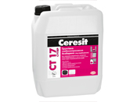
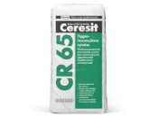
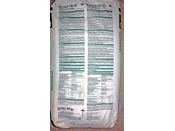

На этой странице представлены часто используемые материалы. Здесь будет краткое их описание и по возможности ссылка на официальный сайт производителя.

Клеящая смесь Ceresit CM 11 (клей для плитки)
Смесь Ceresit CM 11 предназначена для облицовки бетонных, кирпичных, цементно-песчаных или цементно-известковых поверхностей плиткой с водопоглощением не менее 1% (это плитки из керамики, фаянса и т.п. размером не более чем 30x30 см). Растворная смесь Ceresit CM 11 применяется по прочным недеформируемым основаниям на стенах и полах в жилищно-гражданском и промышленном строительстве, внутри. Для наружных работ, а также для облицовки плиткой с водопоглощением меньше 1 % применять Ceresit CM 11с добавкой Ceresit CC 83.
Описание на сайте производителяМагазин "Новая линия" - цена и характеристики


Грунтовка глубокопроникающая Ceresit CT 17 и бесцветная Ceresit CT 17 (супер)
Грунтовка Ceresit CT 17 супер предназначена для укрепления и пропитки пористых, непрочных и сильно впитывающих оснований (лёгкий бетон, штукатурки, гипсовые и кирпичные поверхности), увеличения адгезии материалов Ceresit к основанию.Особенно эффективна:для повышения прочности поверхностного слоя очень слабых оснований; при восстановлении фасадов зданий и сооружений; для закрепления поверхности стен перед наклейкой тонкослойных обоев и окраской вододисперсионными красками; при необходимости сохранения цвета обрабатываемой поверхности основания.
Описание на сайте производителяМагазин "Новая линия" - цена и характеристики

Монтажная ручная пена SOUDAL
Саморасширяющаяся, стабильная, очень хорошая заполняющая способность, хорошие тепло- и звукоизоляционные свойства. Отличная сцепляемость со всеми материалами за исключением полипропилена и полиэтилена. Область применения:Установка, монтаж и изоляция дверных проемов и оконных рам. Заполнение пустот в конструкциях крыш и проходных проемов трубопроводов. Закрепление изоляционных материалов и черепицы на крышах. Изготовление звукоизоляционных экранов.
Описание на сайте производителяМагазин "Новая линия" - цена и характеристики


CR 65 Гидроизоляционная смесь
Полимерцементная растворная смесь для устройства гидроизоляции строительных конструкций.
Смесь Ceresit CR 65 предназначена для гидроизоляции строительных конструкций:
- бассейнов,
- фундаментов,
- гидротехнических сооружений,
- резервуаров для хранения воды, в том числе и питьевой.
Гидроизоляционная смесь применяется со стороны воздействия воды. Защита от периодического увлажнения: 2 слоя обмазочной
гидроизоляции. Защита от постоянного увлажнения: 2 слоя обмазочной гидроизоляции. Защита от гидростатического напора
до 5 метров водяного столба: 2 слоя обмазочной гидроизоляции и слой штукатурной.
Расход 3-8 кг/кв.м
Магазин "Новая линия" - цена и характеристики
Обзор - подготовка поверхности, грунтовка, нанесение краски-подложки, нанесение декоративной штукатурки. Фото. Видео обзор.
Навесить и подключить бойлер не сложно. Но нужно подключить так, что-бы в случае необходимости, с него можно было легко слить воду. Для монтажа нам понадобится...
Производство минеральной ваты осуществляется по инновационной технологии Ecose Technology, исключающей возможность применения компонентов на основе фенолформальдегидных смол, небезопасных для...
Обзор - монтаж ванной фурнитуры. Тест на прочность.